Massachusetts Institute of Technology, 22' Major: Electrical Engineering and Computer Science
Minor: Linguistics (or Philosophy or Mathematics)
I’m an undergrad student who’s passionate about solving challenging problems through technology and entrepreneurship. I'm also a dog-lover, pianist, night owl, INTP, and optimistic nihilist. I love building things in my free time, so you'll always find me working on one side project or another. My current interests revolve around conversational AI, natural language processing, and machine intelligence, as reflected by my research work at MIT.
Django Web Framework Javascript HTML, CSS, Bootstrap PostgreSQL
Machine Learning and NLP
Keras Tensorflow NLTK, spaCy
Robotics
C Arduino Robot Operating System (ROS)
My Interests
What compels me to leave my warm, comfy bed every morning? Here are some of the things I'm really passionate about!
Hacking
I love building things. I love ideating on a problem and being able to rapidly hack together a solution. That’s why, growing up, I taught myself how to code and began attending hackathons, the perfect outlet for my desire to create. Even now, as classes, work, and problem sets pile up, I always find the time to get my hands dirty working on random passion projects. The hacking mindset has allowed me to continue to create, innovate, and has even helped me found my own hackathon.
NLP and Machine Intelligence
I am very excited about the field of natural language processing, and I love thinking about machine intelligence from a linguistic standpoint. I plan on pursuing a career in researching and developing technologies that improve linguistic communication between humans and machines. This interest has led me to pursue many independent, NLP-related projects, as well as my current research at MIT's Computer Science and Artificial Intelligence Laboratory.
Entrepreneurship
The entrepreneurial mindset is something I’ve adopted ever since I became involved in the Cambridge entrepreneurial community back in middle school. In the past, I’ve founded technology ventures with my friends, started 5 interconnected entrepreneurship clubs in high schools around Boston, managed and directed Youth CITIES community programs, and advocated for increasing entrepreneurship and STEM education in high schools.
Linguistics, History, and Philosophy
I’ve always loved learning, and my curiosity often extends far beyond my technical interests. When I’m not working on CS projects, I like to read, listen, and ponder topics of philosophy, history, and linguistics. Ethics and philosophy of mind especially interest me, and I love having discussions on any of these subjects. This interest has led me to pursue a minor in either philosophy or linguistics.
Portfolio
Here are some of the projects that I've worked on in the past.
Whether you think my skills match your project or you just wanna chat -- shoot me an email!
HackMIT Appreader
Motivation
HackMIT receives several thousand applications every year. As an organizer of HackMIT, I wanted to create a platform that would streamline the application reading process, automatically record and manage the scoring of these apps, and track the progress of indivduals throughout the app reading process
Tools Used
Frontend: Semantic UI and ReactBackend: Flask server with PostgreSQL database
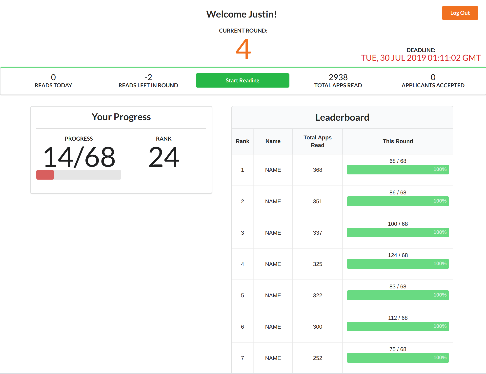
Adsensible
Motivation
Companies today are collecting an unprecedented amount of data about their users - sometimes, a scary amount. We think that users should have a say in how their data is used. Since many companies have ambiguous opt-out systems that might even reset themselves without notification, we decided to take a novel approach to preserving user privacy.
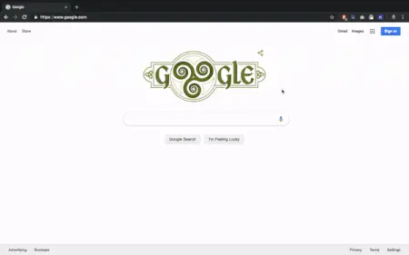
Tools Used
Built using Javascript and JQuery with Flask server backend for calling API endpoints
Description
Adsensible will automatically perform google searches in the background that are orthogonal in meaning to your actual google searches, thus obfuscating your real data with random noise. For example, for a random search, Adsensible may choose another word like "baker" to base noise searches off of. Then, it will generate realistic search queries using the noise topic performs the search. It also sends POST request to the tracking endpoints in the link so Google believes the link was clicked. This process is repeated 50 - 100 times, while remaining light on computational resources.
MIT Infolab
2018 - Present
Current undergraduate researcher at MIT CSAIL, pursuing projects in improving question-answering systems through NLP models.
The Infolab is one of the labs located in MIT’s Computer Science and Artificial Intelligence Laboratory (CSAIL). The primary work of the Infolab is to investigate “natural language and visual perception in different contexts from how it is learned, to how it is grounded in visual perception, all the way to how machines can readily interact with humans.” Many of the projects utilize a variety of natural language processing and computer vision tools, with a unique desire to combine classical AI and machine learning.
Current Research Work
My current research project focuses on using recently developed sequence models and other machine learning tools to improve the performance of question-answering systems, such as Infolab’s START system. Much of the information retrieved from knowledge bases such as Wikipedia can be stored in triples of the format (Subject, Relationship, Object).
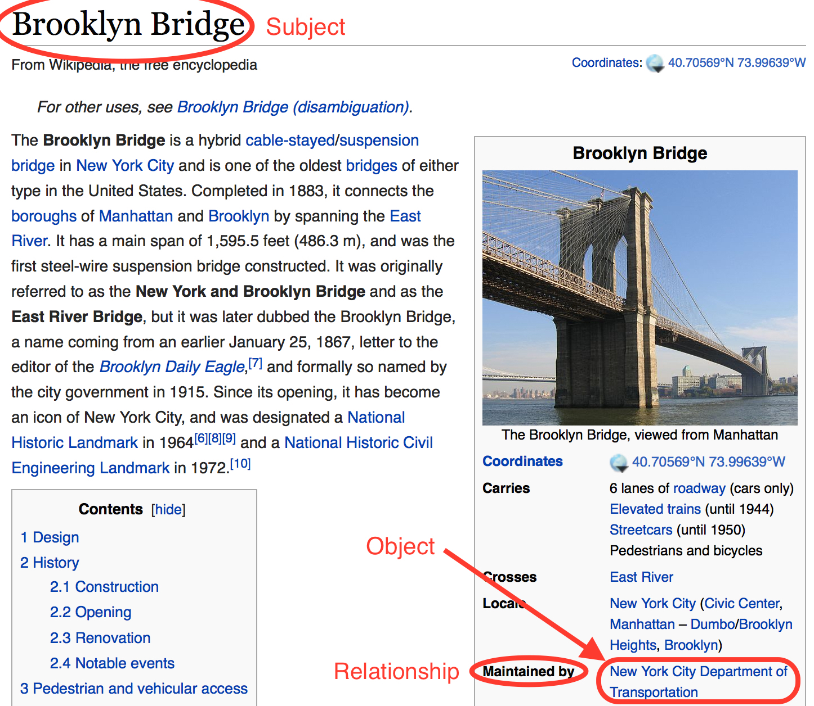
My task is to develop various sequence models to generate natural language questions given a triple of information i.e. (Obama, Spouse, Michelle) → “Obama’s wife is Michelle”. With these automatically generated questions, START will be able to better answer real human questions about these subjects.
I also built a web platform for creating written annotations for educational videos. These annotations are fed into START’s knowledge base, along with the transcript of the video, so that users are able to ask context questions about specific videos. The hope of this project is to apply automated question answering systems to MOOCs and educational platforms.
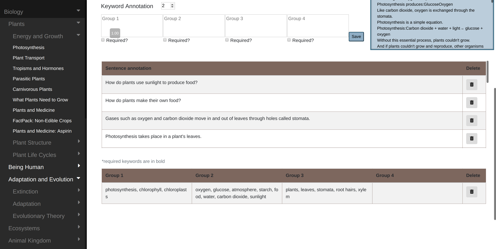
Dormsp.am
Description
Dormsp.am is an online platform that aggregates all events happening on MIT campus and displays them in an easy-to-use web interface. The goal is to change how students learn about and interact with events -- rather than sifting through hundreds of emails, they will be able to see all events on a single calendar, filter by category, search by content, get matched with specific events based on personal interest etc.
Tools Used
Frontend: React Backend: Flask, PostgreSQL
How it Works
A script listens in on MIT dormspam (emails circulated to all students) and scrapes incoming emails. We then classify the emails as event or non-event, then extract key information from the event emails such as date, location and even the category of the event. This information is piped up to the front-end where it's organized into a calendar and will display based on user preferences.
In 2016, disappointed by the small number of hackathons available for high school students in the Boston area at the time, I decided to found my own high school hackathon with a group of friends.
MAHacks was truly a learning experience for me and tested my creativity, organizational and team management skills. As director, I spent countless hours meeting with sponsors, reaching out to mentors, holding team meetings and delegating tasks. I worked to make sure MAHacks was enjoyable, educational, and an event that would introduce newcomers to the wonderful world of hackathons.
Over the course of two years, we grew from ~60 attendees to over 100 by the time I graduated and passed on the directorship.
I was hired as a software engineering intern at Accion in the summer of 2017
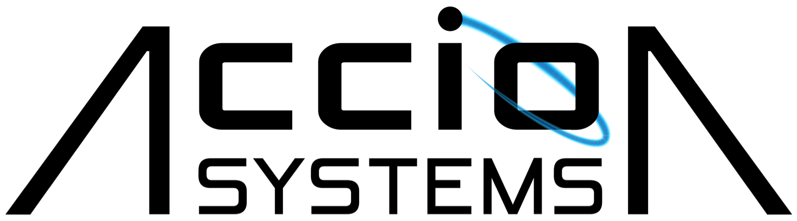
Accion Systems is a startup that produces ion thruster chip technology for micro-satellite propulsion. I was lucky enough to work as an intern here during my junior summer of high school.
The specifics of my project are under NDA, but as an overview, I helped Accion build low-level software that would allow them to reprogram their thruster chips floating in orbit from the ground. I also improved the custom data processing GUI they used to analyze testing data.
During my internship, I had to learn a lot on the fly: microcontrollers, UART, assembly, as well as familiarizing myself with python scientific librares (numpy, pandas) and GUI libraries (tKinter)
My experience at Accion taught me many technical skills, as well as giving me a renewed love for startup culture.
Moodgram
March, 2017
3rd place at MIT Blueprint 2017, MIT’s high school hackathon.
Moodgram was a web-based chat application that performed sentiment analysis on the agents in a conversation. The chat would then change color based on the collective mood of the conversation.
The project was implemented by training a Tensorflow sentiment analysis model on a corpus of labeled dialogue data. The web app was constructed using Angular. This was my first foray into natural language processing and it got me excited about the field.
PRE Web Platform
2016
Created as a project in collaboration with the Youth CITIES non-profit organization.
PRE, which stands for Prototyping Resource Exchange, is a web platform designed to help resource-constrained, early-stage startups find resources to create their first prototypes. The platform is centered around facilitating an exchange of resources and experiences between two parties, such that no monetary resources are required.
The first target use case for PRE is to help young, teenage entrepreneurs launch their products. This project embodies my interest in promoting youth entrepreneurship in the Boston area, especially for students living in resource-constrained environments.
Though this project is currently on hold, there have been plans to launch PRE first through the Youth CITIES network. Updates may be coming.
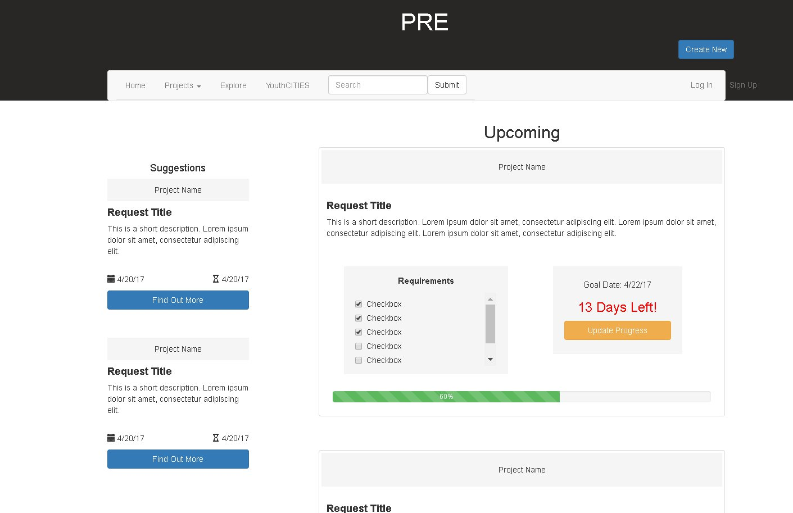
MIT Beaverworks Summer Institute
Summer, 2016
In the summer of 2016, 45 students from around the country were invited to participate in BWSI, a program to teach advanced autonomous robotics to high school students.
MIT Beaverworks Summer Institute was a residential summer program at MIT where we learned the fundamentals of robotics, control theory, planning algorithms and more. We formed teams and
Here is a technical presentation of what I learned at Beaverworks: https://bit.ly/2DpchsJ
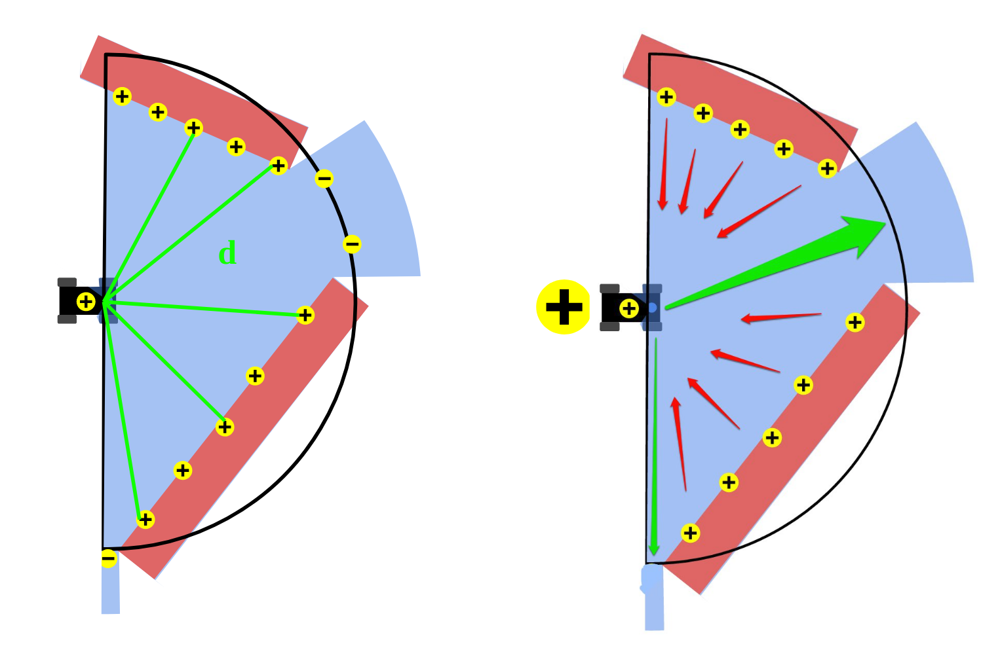
Throughout the program, we:
Formed teams every week, competing and completing various technical challenges
Worked with the RACECAR platform, using LIDAR, camera and IMU sensor input.
Learned to use software such as ROS and Gazebo to program more complex robots.
Implemented a PID controller, a potential field path planning algorithm and SLAM.
Used computer vision to detect and recognize colors and objects.
The four weeks culiminated in a final race between all teams, where my team won 2nd place.
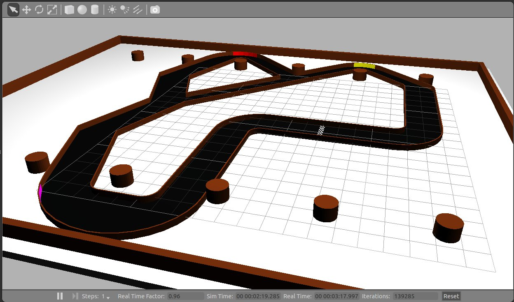
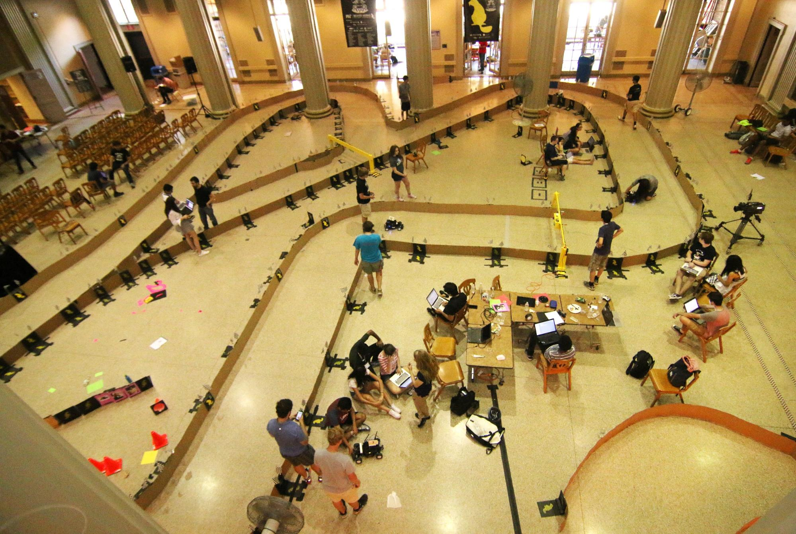
MIT Beaverworks Summer Institute was amazing, and gave me experience working with the kinds of sensors and hardware that would be implemented in the real robotics industry. It also heightened my interest in robotics and technology.
Botball Robotics Team
2014 - 2018
I was part of my school's Botball robotics team for four years, and served as Captain for two. I spent more time at Botball than any class I ever took in high school.
Botball is a robotics competition for high school students. Unlike competitions such as FIRST or Vex, Botball is a fully autonomous robotics competition, meaning there is much more emphasis on software and designing robots that are robust given hardware limitations. Since there is no human controller, robots must have built in recovery mechanisms, as even the smallest of errors can send the robot spiraling out of control.
The robots are given a wide variety of tasks, such as collecting certain game pieces or sorting items by color. You can check out a practice run of one of the main robots I worked on here.
While I was on the team, we won:
1st place in New England Regional Competition 2015, 2016, 2018
1st place in Global Competition, 2015
3rd place in Global Competition 2016
6th place in Global Competition 2018
Botball was my first endeavor into robotics, and I learned and grew a lot from the experience.
I started this venture in 7th grade with my friends, hoping to use the Google Glass to help visually impaired individuals with navigation and other daily tasks.
After our success building an ultrasonic glove to help a blind classmate of ours navigate the hallways in 6th grade, my friends and I decided to expand our idea to using wearable platforms like Google Glass to solve the same problem. We were all very excited about the prospects of wearable tech, though as middle schoolers, we didn’t know where to start.
Luckily, we met a Google Glass developer at a networking event and my team and I were able to obtain an exclusive pair of Google Glasses. Soon, we founded our first venture, Auxivision, and began designing our new navigation system, eventually presenting our project to directors at the Perkin’s School for the Blind. However, our project sputtered to a halted after Google abruptly shut down the Glass program.
Although this venture ultimately failed, this experience has shaped much of my dreams and aspirations throughout middle and high-school, giving me a real taste of the excitement and failures of entrepreneurship.
In 6th grade, a group of friends and I decided to create a “Tacit Glove” to help a blind student in our grade navigate the halls.
The "Tacit Glove" was inspired by something we saw in an issue of MAKE magazine that we wanted to recreate. It's a device that is worn on the hand equipped with ultrasonic sensors in the front and motors in the back for haptic feedback when navigating an environment.
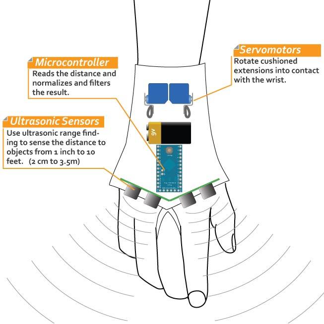
We worked on it for a year and presented it to our blind friend. Though not a perfect solution, it was exciting to be able to create technology that could help make someone's life easier. This was my first real technology-related project, and it inspired me to pursue my passion for using technology to solve important problems.
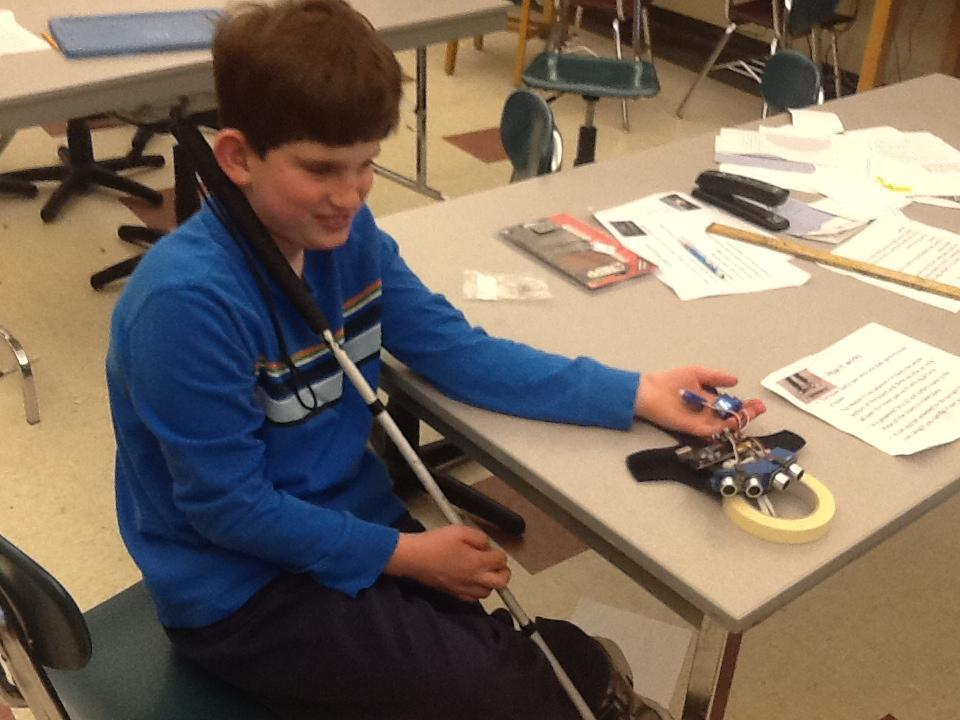
Later, we expanded the idea to using wearable technologies like Google Glass as a platform for helping the visually impaired navigate, leading me and my friends to found Auxivision.